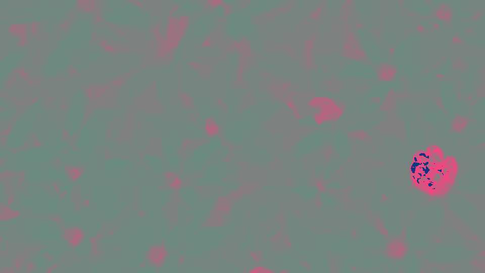
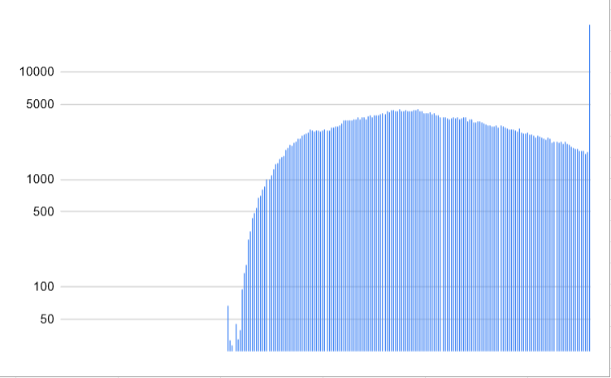

Übung 4
Aufgabe 1
a.)
RGB ist der gebräuchlichste Farbraum bei der Aufzeichnung und Darstellung von Bildern. Hier wird das Lichtspektrum in seine Rot-, Grün- und Blauanteile aufgespalten. Der YCbCr Farbraum hingegen besteht aus der Luminanz Y (Helligkeit) und den Farbanteilen (Chrominanz) Cb und Cr. Die RGB Farben eines Bildes lassen sich also in den YCbCr Farbraum transformieren. Für viele Anwendungen, z.B. die Bildkompression, ist es günstig, Helligkeits- und Farbinformation getrennt zu verarbeiten. Nenne den physiologischen Grund dafür!
Aufgrund der physiologischen Tatsache, dass das Auge Farbinformation im Gegensatz zur Helligkeitsinformation nur mit reduzierter Auflösung wahrnehmen kann, kann die Chrominanz von Bilder mit einer geringeren Abtastrate gespeichert werden. Die Auflösung der Luminanz bleibt dabei unangetastet. Somit können z.b Bilder deutlich in ihrer Größe reduziert werden, ohne das diese groß an Qualität verlieren.
b.)
Erstelle aus deinem eigenen Bild Versionen, die nur jeweils den Rot-, Grün- und Blauanteil zeigen. (Hinweis: Dazu müssen einfach die jeweils anderen Farbwerte auf null gesetzt werden)
Natur - Rot
Natur - Grün
Natur - Blau
Piano - Rot
Piano - Grün
Piano - Blau

c.)
Nun erzeuge jeweils ein Bild für Y, Cb und Cr. Lese dafür jedes Pixel ein und berechne die Helligkeit Y (Luminanzformel!) sowie die Chrominanzen Cb und Cr (Chrominanzformeln!) aus den RGB Werten.
// ++++++++++++++++++++++++++++++++++++++++++++++
// Übung 4 - Aufgabe 1c) -> YCbCr Bilder erzeugen
// ++++++++++++++++++++++++++++++++++++++++++++++
for (int y = 0; y < bmp.image.getHeight(); y++) {
for (int x = 0; x < bmp.image.getWidth(); x++) {
PixelColor currentPixelColor = bmp.image.getRgbPixel(x, y);
// Y berechnen (Helligkeit (Graustufen))
double pcY = 0.299 * currentPixelColor.r + 0.587 * currentPixelColor.g + 0.114 * currentPixelColor.b;
// Cb berechnen (Farbigkeit (Blau-Gelb-Differenz))
double pcCb = (-0.169 * currentPixelColor.r - 0.331 * currentPixelColor.g + 0.5 * currentPixelColor.b) + 128;
// Cr berechnen (Farbigkeit (Rot-Grün-Differenz))
double pcCr = (0.5 * currentPixelColor.r - 0.419 * currentPixelColor.g - 0.081 * currentPixelColor.b) + 128;
// Konstanten für die verschiedenen Bilder festlegen
pcY = 128;
//pcCb = 128;
pcCr = 128;
// Rekonstruktion der RGB Bilder unter jeweiliger Verwendung der Konstanten, damit die Bilder nicht
// vollständig zu RGB Bildern zurück gerechnet werden
// Beispiel: für Cb Bild werden pcCr und pcY auf 128 gesetzt und pcCb normal berechnet
double pcR = pcY + 1.403 * (pcCr - 128);
double pcG = pcY - 0.344 * (pcCb - 128) - 0.714 * (pcCr - 128);
double pcB = pcY + 1.773 * (pcCb - 128);
PixelColor newPixelColor = new PixelColor((int) pcR, (int) pcG, (int) pcB);
bmp.image.setRgbPixel(x, y, newPixelColor);
}
}
Y
Cb
Cr
Y
Cb
Cr
d.)
Wandle zur Rekonstruktion deines Bildes die YCbCr Werte zurück in RGB.
// ++++++++++++++++++++++++++++++++++++++++++++++
// Übung 4 - Aufgabe 1d) -> YCbCr Bilder zu RGB Bildern rekonstruieren
// ++++++++++++++++++++++++++++++++++++++++++++++
//
for (int y = 0; y < bmp.image.getHeight(); y++) {
for (int x = 0; x < bmp.image.getWidth(); x++) {
// get Pixel
PixelColor currentPixelColor = bmp.image.getRgbPixel(x, y);
// berechne Y (Helligkeit (Graustufen))
double pcY = 0.299 * currentPixelColor.r + 0.587 * currentPixelColor.g + 0.114 * currentPixelColor.b;
// berechne Cb (Farbigkeit (Blau-Gelb-Differenz))
double pcCb = (-0.169 * currentPixelColor.r - 0.331 * currentPixelColor.g + 0.5 * currentPixelColor.b) + 128;
// berechne Cr (Farbigkeit (Rot-Grün-Differenz))
double pcCr = (0.5 * currentPixelColor.r - 0.419 * currentPixelColor.g - 0.081 * currentPixelColor.b) + 128;
// RGB Daten rekonstruieren
double pcR = pcY + 1.403 * (pcCr - 128);
double pcG = pcY - 0.344 * (pcCb - 128) - 0.714 * (pcCr - 128);
double pcB = pcY + 1.773 * (pcCb - 128);
// set new Pixel
PixelColor newPixelColor = new PixelColor((int) pcR, (int) pcG, (int) pcB);
bmp.image.setRgbPixel(x, y, newPixelColor);
}
}
Natur Rekonstruktion
Aufgabe 2
Mithilfe eines Histogramms kann die Verteilung (Häufigkeit) der Helligkeiten eines Bildes dargestellt werden. Erstelle ein Histogramm für das monochrome Detailbild aus Aufgabe 1 (Y - Bild). Lese dafür den Helligkeitswert der Pixel ein und bestimme die Helligkeitshäufigkeiten (Anzahl gleicher Helligkeiten). Diese sollen in eine Textdatei geschrieben und als Histogramm dargestellt werden (z.B. in Excel, Java).
// ++++++++++++++++++++++++++++++++++++++++++++++
// Übung 4 - Aufgabe 2) Histogramm
// ++++++++++++++++++++++++++++++++++++++++++++++
int[] hist = new int[256];
PrintWriter outputWriter = new PrintWriter("Histogramm-Klavier.txt", StandardCharsets.UTF_8);
for(int y = 0; y < bmp.image.getHeight(); y++){
for(int x = 0; x < bmp.image.getWidth(); x++){
PixelColor currentPixelColor = bmp.image.getRgbPixel(x, y);
// da rgb immer gleich sind bei grauwerten, reicht es wenn man einen farbwert betrachtet
hist[currentPixelColor.r]++;
}
}
for(int pixelColor : hist) {
outputWriter.println(pixelColor);
}
outputWriter.flush();
outputWriter.close();
Naturbild Histogramm
Aufgabe 3
a.)
Berechne die mittlere Helligkeit des monochromen Detailbildes aus Aufgabe 1 (Y - Bild). Lese dafür den Helligkeitswert der Pixel ein. Die mittlere Helligkeit ist die Summe aller Helligkeitswerte geteilt durch die Anzahl der Bildpunkte. Berechne auch den Kontrast des Bildes, d.h. die Standardabweichung der Helligkeit.
Mittlere Helligkeit: 99.79
Standardabweichung: 44.49
// ++++++++++++++++++++++++++++++++++++++++++++++
// Übung 4 - Aufgabe 3a)
// ++++++++++++++++++++++++++++++++++++++++++++++
// mittlere Helligkeit berechnen
int allPixelColors = 0;
for(int y = 0; y < bmp.image.getHeight(); y++){
for(int x = 0; x < bmp.image.getWidth(); x++){
allPixelColors = bmp.image.getRgbPixel(x, y).r;
}
}
double averageBrightness = (double) allPixelColors / (bmp.image.getWidth() * bmp.image.getHeight());
System.out.println("mittlere Helligkeit: " + averageBrightness);
// Standardabweichung berechnen
allPixelColors = 0;
for(int y = 0; y < bmp.image.getHeight(); y++){
for(int x = 0; x < bmp.image.getWidth(); x++){
PixelColor currentPixelColor = bmp.image.getRgbPixel(x, y);
allPixelColors += Math.pow(currentPixelColor.r - averageBrightness, 2);
}
}
double variance = (double) allPixelColors / (bmp.image.getWidth() * bmp.image.getHeight());
double standardDeviation = Math.sqrt(variance);
System.out.println("Standardabweichung: " + standardDeviation);
b.)
Verändere das monochrome Bild in der Helligkeit durch Subtrahieren der Werte h=(-20, -40, -60, -80) bzw. Addieren der Werte h=(20, 40, 60, 80). Beachte dabei, dass ihr beim Ergebnis der Pixelwert- berechnung im 8-Bit-Bereich bleibt. Berechne die Histogramme des hellsten und dunkelsten Bildes.
// ++++++++++++++++++++++++++++++++++++++++++++++
// Übung 4 - Aufgabe 3b)
// ++++++++++++++++++++++++++++++++++++++++++++++
int brightness = -80;
for(int y = 0; y < bmp.image.getHeight(); y++){
for(int x = 0; x < bmp.image.getWidth(); x++){
int pxVal = bmp.image.getRgbPixel(x, y).r + brightness;
if(pxVal < 0) pxVal = 0;
else if(pxVal > 255) pxVal = 255;
bmp.image.setRgbPixel(x, y, new PixelColor(pxVal, pxVal, pxVal));
}
}
Helligkeit (-20)
Helligkeit (-40)
Helligkeit (-60)
Helligkeit (-80)
Helligkeit (+20)
Helligkeit (+40)
Helligkeit (+60)
Helligkeit (+80)
Histogramm Helligkeit (+80)
(Logarithmische Wertedartstellung)
Histogramm Helligkeit (-80)
(Logarithmische Wertedartstellung)
c.)
Erhöhe bzw. verringere den Kontrast durch Multiplikation mit den Faktoren k=(0.2, 0.4, 0.8, 1.0) sowie k=(1.5, 2.5, 5.0, 10.0). Was würde bei einer Kontraständerung mit k < 0 passieren (Einfach ausprobieren und Bild speichern!)?
// ++++++++++++++++++++++++++++++++++++++++++++++
// Übung 4 - Aufgabe 3c)
// ++++++++++++++++++++++++++++++++++++++++++++++
double contrast = 0.2;
int[] hist = new int[256];
PrintWriter outputWriter = new PrintWriter("Histogramm-3c)-low-contrast.txt", StandardCharsets.UTF_8);
for(int y = 0; y < bmp.image.getHeight(); y++){
for(int x = 0; x < bmp.image.getWidth(); x++){
double pxVal = bmp.image.getRgbPixel(x, y).r;
pxVal = contrast * (pxVal - 128) + 128;
if(pxVal < 0) pxVal = 0;
else if(pxVal > 255) pxVal = 255;
hist[(int) pxVal]++;
bmp.image.setRgbPixel(x, y, new PixelColor((int) pxVal, (int) pxVal, (int) pxVal));
}
}
for(int pixelColor : hist) {
outputWriter.println(pixelColor);
}
outputWriter.flush();
outputWriter.close();
Kontrast (0.2)
Kontrast (0.4)
Kontrast (0.8)
Kontrast (1.0)

Kontrast (1.5)
Kontrast (2.5)

Kontrast (5.0)
Kontrast (10.0)
Erklärung zu Kontrast Histogrammen
Bei den Histogrammen der Helligkeitsänderungen kann man sehr gut erkennen, wie sich die Werte auf der x-Achse verschieben. Beim unterbelichteten, dunklen Bild sind offensichtlich sehr viele dunkle (vor allem schwarze) Pixel vorhanden und die sehr hellen Pixel fehlen durch die Verschiebung gänzlich. Beim hellen Bild ist genau das Gegenteil der Fall. Bei den Kontrastveränderungen sehen die Histogramme und Bilder komplett anders aus. Je höher der Kontrast, desto stärker sind auch die Unterschiede in den Farbdarstellungen und die Pixel bewegen sich zum Maximum/Minimum der Darstellung. Das heißt hellere Pixel werden immer weißer und dunklere Pixel immer schwarzer. Das erkennt man auch sehr gut im Histogramm, anhand der beiden extrem herausstechenden Balken bei 0 und 255. Ein weiterer Effekt, der im Histogramm erst wirklich erkennbar wird ist, dass sich Farbcluster bilden, also die Anzahl der verschiedenen Farben abnimmt und sich in gleichmäßigen Abständen anordnen. Beim niedrigen Kontrast hingegen sammeln sich die Farben im mittleren Bereich um die 128 an. Dadurch wird das Bild sehr gräulich, was auch das Histogramm belegt.
Histogramm Kontrast (10)
Histogramm Kontrast (0.2)
Bei einer Kontraständerung k < 0 wird das Original Bild zu einem Negativbild konvertiert.
Das heißt die Originalfarben werden invertiert.
-1.0 Kontrastbild